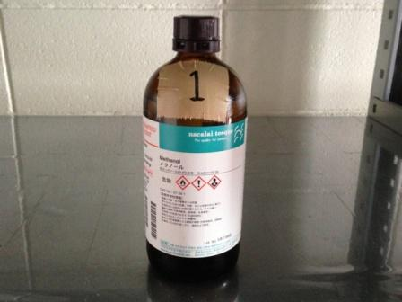
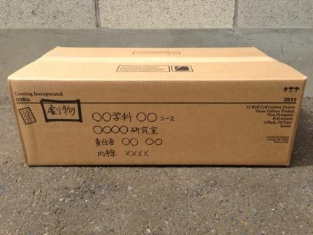

廃棄試薬回収
不要になった試薬は、年に2回（春と秋）行っている廃棄試薬回収にて回収しています。また、廃棄試薬回収では水銀温度計やマノメーター等の水銀を含む実験器具も併せて回収を行っています。
廃棄試薬回収の際には事前にIASOシステムでの廃棄薬品登録と廃棄試薬書式への記入が必要となります。廃棄薬品登録の手順についてはこちらをご参照下さい。
廃棄試薬書式
下記のリンクから廃棄試薬書式をダウンロードできます。
・廃棄試薬書式 ダウンロード
・廃棄試薬書式 記入例 ダウンロード（PDF）
廃棄試薬書式の記入方法
廃棄試薬書式は”劇物用”、”毒物用”、”その他の試薬”の3種類に分かれています。書式に記入をする際はそれぞれの廃棄試薬に対応する書式に記入して下さい。書式への記入はできるだけ手書きではなくExcelにてお願いします。
- 所属の研究室、責任者名、内線番号を記入して下さい
- 全ての廃棄試薬に廃棄番号を振って下さい この番号は劇物、毒物、その他試薬で通し番号として下さい（複数の試薬に同じ番号が振られないようにして下さい）
割り振った番号をそれぞれの試薬ビンに廃棄番号ラベルとして貼り付けて下さい
- 廃棄する試薬の薬品名を記入して下さい 商品名を記入する場合は備考欄に内容物の化合物名を記入して下さい
- 試薬ビンの容器の容量をgまたはmL単位で記入して下さい
- 試薬ビン内に残っている試薬の量をgまたはmL単位で記入して下さい
- 薬品の状態を選択して下さい 無機系の試薬試薬は酸・アルカリのどちらかを選択して下さい
- 劇物、毒物、危険物に該当する試薬の場合は該当する□にチェックを入れて下さい
- 有害重金属に該当する試薬の場合は該当する□にチェックを入れて下さい
- 試薬ビンにラベルがない場合、またはラベルが読み取れない場合は□にチェックを入れて下さい
- 注意点などがある場合は記入して下さい また、③の試薬名の欄に商品名を記入した場合はこの欄に内容物の化合物名を記入して下さい
試薬等の梱包
廃棄試薬を搬入する際は、以下のとおり梱包して下さい。
- 廃棄する試薬等には全て廃棄試薬書式で割り当てた廃棄登録番号をシールで貼り付けるか、ラベルにペン等で記入して下さい
- ダンボール箱を用意し廃棄試薬を”劇物”、”毒物”、”その他の試薬”の分類ごとに分けて入れて下さい。
- ダンボール箱の側面に油性ペンで”分類”、”所属”、”責任者名”、”内線番号”を記載して下さい
|  |
 |
廃棄試薬には廃棄番号を貼り付けて下さい |
ダンボールには廃棄試薬の分類、所属、責任者名、内線番号を記載して下さい |
回収日時・回収場所
廃棄試薬回収の日時は回収日の約1ヶ月前にIASOシステムに登録されている方へメールにてご連絡しています。回収場所は廃液回収と同じく環境保全施設となります。環境保全施設の場所はこちらを参考にして下さい。
{kind=link}
{kind=link}
{kind=link}